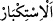

Tâcü’l-masâdır’da “ ümit etmek ve korkmaktır” der. Korkma mânâsına göre âyet
‘azâbımızı görmekten korkmayanlar’ demektir.
Kâfirlerin iddiâsına göre insan olmak peygamber olmaya ters olduğu için “Bize”
peygamber olarak “ya melekler indirilmeliydi ya da” açıkça ve gözlerimizle
“Rabbimizi görmeliydik” de bize Muhammed’i tasdik etmeyi ve ona uymayı
emretseydi. Çünkü bu yol îmâna sevk etmek ve Muhammed’i tasdik etmek husûsunda
daha güzel ve daha güçlü bir yoldur. Allah böyle yapmadığı için biz de Allah’ın O’nu
tasdik etmemizi istemediğini bildik. “dediler.”
Şeyh Necmeddîn’in et-Te’vîlât’ındaki güzel yorumlarından birisi de şudur: “Allah
işâret etmektedir ki âhirete ve haşre inanmayan kâfirler “Rabbimizi görmeliydik”
sözleriyle Rabb’lerini görmeyi temenni etmektedirler. O halde âhirete ve haşre
inandıklarını iddiâ eden mü’minler, bu konuda nasslarda bulunduğu halde nasıl
Rablerini görmeyi (rü’yet) inkâr ederler?! Haşri inkâr edenlerin böyle mü’minlere
üstünlüğü vardır. Çünkü onlar Rabb’lerini görmeyi istemişler, meleklerin indirilmesini
câiz gördükleri gibi onu da câiz görmüşlerdir. Îman ettiklerini söyleyip rü’yetullah’ı
inkâr edenlerle yeniden diriltilmeyi inkâr eden kâfirler, hakkında haber ve naklî delil
bulunan bir şeyi inkâr husûsunda birleşmektedirler. Çünkü haşrin olacağına dâir naklî
delil bulunduğu gibi mü’minlerin Allah’ı göreceğine dâir de naklî delil vardır.”
“Andolsun” Allah’a yemin olsun “ki onlar kendileri hakkında kibire kapılmışlar”
yâni kendilerine meleklerden peygamberler gönderilmesini ve Allah Teâlâ’yı görmeyi
istemek sûretiyle kendi nefislerine değer ve üstünlük vermişler “ve azgınlıkta pek ileri
gitmişlerdir.” Zulüm ve taşkınlıkta son derece haddi aşmışlar ve onların son haddine
kadar varmışlardır. Çünkü onlar üstün mûcizeleri gördükleri halde onlardan yüz
çevirdiler ve kendi habîs nefisleri için güzel ve hoş varlıklar olan meleklerin ve Allah
Teâlâ’nın görülmesini teklif ettiler. Halbuki Allah Teâlâ’yı dünyada görmek bizim
Peygamberimiz (a.s.) dışında insanlardan ve peygamberlerden hiç birine nasîb
olmamıştır. Rasûlullah (s.a.) ise Allah Teâlâ’yı dünya sınırını, yâni kevn ve fesâd
âleminden olan yedi feleği geçtikten sonra ancak görebilmiştir.
“ kişinin böbürlenip kendisini olmadığı gibi göstermesi, yâni boş yere
kibirlenip büyüklük taslamasıdır.
Kâşifî der ki: “Allah’a yemin olsun ki nefislerinde ululuk ettiler; yâni bu tahakkümde
davranışlarıyla tekebbür ettiler, cür’et gösterdiler.”
“ aşırılık ve tâatten yüz çevirmek demektir. el-Vasît’ta şöyle der: “Onlar Allah’ı
görmeyi istediklerinde azgınlıkta ileri gitmekle vasfedildiler. Çünkü onlar bunu dünyada
hakka inad olarak, Allah ve rasûlüne itâatten yüz çevirerek istediler. Böylece sözlerinde
ve inkârlarında son derece aşırılık gösterdiler.
el-Es’iletü’l-müfhıme’de şöyle der: “Allah Teâlâ’yı görmek câiz olduğu halde
müşrikler onu istediklerinde neden Allah onları azarladı?” Biz deriz ki: Azarlama,
onların talep etmeye hakları bulunmadıkları bir şeyi talep etmelerindendir. Çünkü onlar